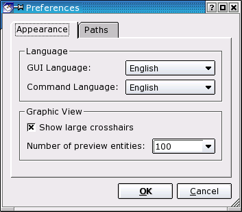
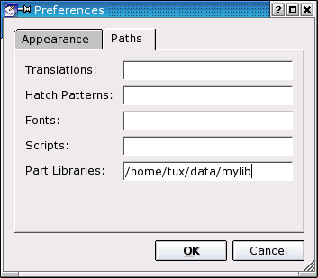

|
||
 |
||


18 Application Preferences
The general preferences dialog is used to change application options. There are options that apply to the whole QCad application rather than just a single drawing.
Edit - General Preferences
Appearance
Language
The first language option changes the language of the QCad GUI (menus, dialogs, ..). The second option changes the translation used for the commands that are entered in the command line. It is possible to e.g. use German menus and enter the English commands (Figure 66).

Figure 66: General Preferences for QCad.
Graphic View
Tick "Show large crosshairs" to enable the crosshairs of the mouse cursor to
extend to the drawing borders.
Sometimes it's useful to limit the number of preview entities. If you
experience performance problems when moving or inserting entities in
a drawing, please reduce the number of preview entities shown. You can
set the value to 0 to disable the preview.
Paths
On the "Paths" tab, you can configure individual paths where QCad will search for translations files, hatch patterns, fonts, scripts, and part libraries (Figure 66b). You can enter multiple paths by separating them with a semicolon (;).

Figure 67: Configuration of individual paths.
|